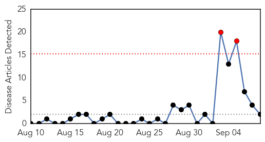
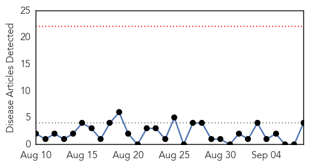
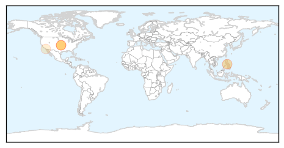
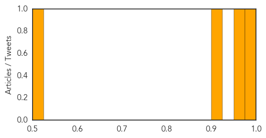

MERS
30-Day Web Trend
2 alerts, 0 warnings

30-Day Twitter Trend
1 alerts, 0 warnings
Article Locations

Article Confidences

Top Articles:
Top Tweets:
-
No tweets found for Sep 08, 2014
Measles
30-Day Web Trend
0 alerts, 0 warnings

30-Day Twitter Trend
0 alerts, 0 warnings

Article Locations
Article Confidences
Top Articles:
- 0.986
- Largest Spike In Measles Cases Since 1994 Due To Anti-Vaxxers, CDC Says: 90% Of Cases In Unvaccinated People
- 0.965
- 592 Cases Reported In US After Disease 'Eliminated' In 2000
- 0.922
- U.S. measles cases fueled by Philippines outbreak
- 0.515
- Anti-vax ‘Dr. Bob': Opting out of vaccines bad for public health, but ‘safe enough’ for your kid
Top Tweets:
-
No tweets found for Sep 08, 2014